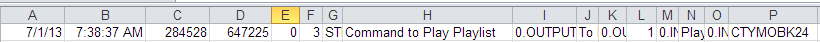
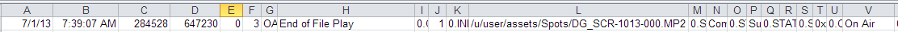
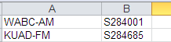
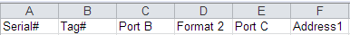
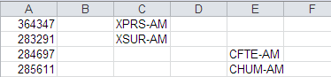

Wegener Compel Import
The purposes of the Wegener Compel Import are:
- To update the dates and times of web spots whose dates and times have been captured by Wegener.
- To show auto-posted spots on the website.
- Stations cannot alter auto-posted spots
- Stations can manually post spots not updated by auto-posting.
- These spots are manually posted following the same rules as before.
Import Process
To import Wegener spot information and update Affiliate Affidavits, a station must have an active agreement in the Affiliate Tracking system. When aired information is imported into the Affiliate Tracking system, the spot information is reconciled against Affiliate Affidavits. Once reconciled, the fact that Affiliate Affidavits was updated via the Wegener import is not highlighted.
Unlike other Imports, Wegner is imported in real time, on a daily basis. This means that the Affiliate Tracking system and the Counterpoint Affidavit system can be updated with aired information as soon as a day or sports event is posted, instead of waiting for the entire week to be posted. The week in Affiliate Affidavits will be flagged as partially posted until every spot is accounted for. Any spot not returned through the import must be manually posted by the station.
During the Wegner import process, two actions occur: the airing information and posting status for the Wegener spots on the import file gets updated on the Affiliate system; and the airing information also gets sent to the Counterpoint Affidavit System.
Manually Posting
Users will continue to have the ability to manually post spots when needed prior to the import, but the amount of manual posting required is greatly reduced. Any spot not imported from Wegener, or any spot flagged as missed by Wegener, must be manually posted by the station.
In Multicast agreements, only the parent station is monitored by Wegener, so only the parent station is included in the auto-posted import. All sister stations will have to be manually posted.
The status of any manually posted Wegener spot will be overwritten by the import (unless the manually posted spot was imported into the Affiliate Tracking System), since the airing information is coming directly from the Wegener system and is more reliable. Stations will be able to manually post any spots flagged as Missed by the Wegener system.
Import Rules
- Aired date and time information is imported and reconciled against existing spots in Post C.P.
- Auto Posted reconciled spots are placed below the green submitted line.
- Those spots placed into the Submitted grid area from the Affiliate Management export can’t be altered in any way by the station.
- The Wegener system monitors an actual radio signal coming from the station antenna, so it is the best indicator of when (if) a spot aired.
- Since it is possible for a station to be hooked up to both Marketron and Wegener Compel for the same Agreement, a station could have some spots that come from Wegener, some from Marketron, and some from both. The rule is that Marketron posting information never replaces Wegener posting information, and Wegner posting information always replaces Marketron posting information.
- Any information manually posted will be replaced by the Wegener Auto-Posted information.
- The only case in which manually posted spots will not be replaced by the Wegener Auto-Post, is when the manually posted spot is imported into the Affiliate Tracking System prior to the Wegener Auto-Posted spot.
- Spots that have been posted manually and moved by the system to the submitted area can still be altered by the user, prior to being exported to the Affiliate system.
- The station user on the Web will be allowed to alter Missed spots.
- Only the Parent station in a Multi-Cast agreement is auto-posted, sister stations must be manually posted.
- No history of spot time changes is retained.
- The log screen is still viewable after imports, unless deleted.
- Error messages are created and recorded in the WegenerImportLog.txt file, stored in the CSI\Prod\Data\Messages folder.
File Contents and Results
Each import spot file will be for all stations and only one day, transactions that occurred on that day only.
The returned file contains:
- Vehicle ID
- Station Serial ID
- Port #
- Aired date
- For stations in a non-Eastern time zone, spots that aired between 12m-3am Eastern time will be posted to the previous day, with the time zone adjustments made accordingly. In other words, a spot that airs at 1am Eastern time on Tuesday and that airs at 10pm Pacific time on Monday will be marked as posted for Monday for the Pacific time station
- Air Time
- Break number
- The break number that is returned is the break number that was part of the export to Wegener
- The break numbers are dynamically computed during the Import
The system checks to see if the copy matches. If it does not match, a message that reads "ISCI Not Matching" will be output along with the spot information on the WegenerImportLog.txt file, in the CSI\Prod\Data\Messages folder
When an error is shown on the result file (WegenerImportLog.txt), the air date, air time, break number, advertiser, and row number (from the import file) are shown
Importing Sports Events
Sports Event spots are handled slightly differently since these spots do not have a set break or position. These aired spots are matched against the Advertiser.
The import file contains the Vehicle Group ID followed by a colon and the Event number. Example: NFLMO:73.
Since the spots will be run in any order, it is recommended that sports pledges not be entered as Live, but rather as Fed 12m-12m, Delayed 12m-12m, so the station is compliant. If they are entered as Live, the station will never be compliant.
Import Procedures
The import supports two different file formats. The original file format will have an extension of .OCSV or .OASV. The newer file format will have an extension of .CSV. During the Import process using the original file format, two record types are examined: the “Command to Play Playlist” and “End of File Play”. The “Command to Play Playlist” is used to determine the station, vehicle and break number. The “End of File Play” is used to obtain the actual air time of the spot and find its matching spot in the affiliate system. For the new file format, only the “End of File Play” record is used to get the airing information.
Prior to running the import, place the Wegener Spot Import file, the Jns_RecSerialNum.csv file, and the Port B-C.csv file into a folder that is easily found, for example, CSI\Prod\Import.
To import the Aired Wegener information, go to File -> Import -> Wegener-Compel.
- Import File: Enter the path and file name of the day to be imported, or browse to its location and select it. You may need to switch the file extension on the browse screen to view the different file formats that are available (.csv, .ocsv, and .oasv).
- This file will contain all the spots to be reconciled for one day only.
- Station Info: Enter the path where output jns_recserialnum.csv and portB-C.csv files are stored
- Press the Import button
Post Import Proofing
Once the import has completed, open the Import file with Excel for proofing purposes. This is used so that the various fields will be in the correct columns.
The following proofing instructions are for the original file format. The proofing instructions are similar for the new file format, but only the “End of File Play” record is used to get the airing information, instead of the “Command to Play Playlist” and “End of File Play” records.
- Scan for the command “Command to Play Playlist”
- This will be in column H
- Write down the Serial number found in column C
- In the sample below the serial number is 284528
- Write down the Port number found in column L
- In the sample below the port is 1
- Write down the Vehicle Group Code: Week Day: Break Number, All three values are in column P
- In the sample below the field is CTYMOBK24
- Separate the three parts:
- Wegener Vehicle Group code is CTY
- The week day is Monday
- The break number is 24
- Ignore the “Command to Play Playlist” record if:
- the Week Day is prior to the Import day
- If the Week day is Sunday, then ignore the record
- If the record is to be ignored, then return to step 1, looking for another “Command to Play Playlist” record
- This record indicates that a spot that was to air on Sunday, aired probably on Monday instead
- At this time, this record is not being handled
- Translate the Wegener Group code into the actual vehicle name
- Use the Group report to find the vehicle name for the Group code
- Look for a matching “End of File Play” record
- Match on Serial number and Port number
- Serial number will be found in Column 3
- Port number will be found in column J
- If a “Command to Play Playlist” matching the previous “Command to Play Playlist” serial number and port is found prior to finding the “End of File Play” record, then ignore the “Command to Play Playlist” found in step 1
- This case indicates that the spot associated with the “Command to play playlist” was not logged into the Import file
- Return to step 1 if this case is found
- Check the Airing Status, column V
- If it is not “On Air” or it is Blank, ignore the record
- If this is the case, return to step 10
- Extract the ISCI code from the “End of File Play” record
- The ISCI information is in column L
- Remove the folder information prior to the ISCI code and the .mp2 extension to obtain the airing ISCI
- In the sample below, the ISCI is DG_SCR-1013-000
- Obtain the station call letters from the serial number and port number. Translate the port numbers to letters as follows: 1 is A, 2 is B and 3 is C.
- If Port A, scan jnsRecSerialNum.csv file for matching serial number
- Ignore any alpha characters prior to the number in the jns_recserialnum.csv file
- When matching serial number found, write down the Call Letters associated with the number
If Port B or C, then scan the Port B-C file for a matching serial number - Again, write down the call letters for the matching serial number obtained from the matching port column
- Find the break that matches the vehicle and break number obtained from steps 4-7
- In Affiliate Post Log, enter the vehicle name and import date
- Count the break numbers until the matching break is found
- Adjacent breaks are counted as separate breaks
- Look within the break for the matching ISCI
- If not found, look for a matching advertiser name
- For the ISCI found in step 11, run the Traffic report “Copy Inventory by ISCI” to obtain the Advertiser name. If a match can’t be found, look into the result file to see if the record was logged as matching spot could not be found
- If not found, return to step 10 to continue looking for other spots that might have aired within the break
- Translate the air time into Local Station time (all times are Eastern)
- Use the vehicle time zone table and the station zone to determine how to translate the air time from Eastern to the station Local time
- Check if the break was to Air via the Agreement
- Translate the break time obtained from step 13 into local time, once again use the vehicle time zone table and the station zone to determine the break time
- Check if the spot was flagged correctly via Post CP
- If the spot was to air, does the spot show in Green and is the air time posted correctly (Local time)
- If the spot was not to air (agreement was set as Not Carried), does the spot show in green as Not Carried
- Return to step 10 looking for more spots to check for the break
|
|
Record Examples
Example “Command to Play Playlist” record

Example “End of File Play” record:

Example from jns_RecSerialNum.csv

Example from Port B-C.csv:
Header:

Rows that show call letters for Port B and C

Wegener Compel Auto-Import
The Wegener Compel Import can be configured to run automatically, using the CSI Server Manager feature (on version 7.1 and above).
Setup Instructions
Step 1: Add the following three folders to the Prod folder:
CompelImport
CompelSave
CompelStationInfo
The CompelImport folder is where the Compel import files will be stored. (If the Compel import files will be placed in a different folder that has already been created, then there's no need to add this folder.)
The CompelSave folder is where the Compel import files that have been imported will be moved to.
CompelStationInfo is where the Jones files are stored (JNS_RecGroup.csv, rx_calls.csv, etc.). (If the Jones files will be placed in a different folder that has already been created, then there's no need to add this folder.)
Step 2: Add a new Wegener entry to the Affiliat.ini file.
The Import path should point to the location where the Compel import files are stored.
The StationInfo path should point to where the Jones files are located.
Example:
[Wegener]
Days_to_Retain = 5
Import = d:\csi\prod\CompelImport
Save = d:\csi\prod\CompelSave
StationInfo = d:\csi\prod\CompelStationInfo
The example paths will likely need to be modified to match the system configuration.
Step 3:
Modify the CSI_Server.ini (typically located in the csi\prod\exe folder) by adding CompelAutoImport to the Section Names field. Then add a new CompelAutoImport section with the following values:
- StartTime: the start time of the auto import.
- Enabled: 1 means it is enabled.
- WeekDays: to have it run every day of the week, enter 1111111
- Interval: the amount of time in seconds the auto import should be run. To have it run every hour, set it to 3600.
- MonthDaysToRun: leave it set to a blank value.
- TimeSlot: leave it set to a blank value.
- Exe: must point to the affiliat2.exe file, typically located in the exe folder.
- StartInFolder: must point to the location of the Traffic.ini and Affiliat.ini file, which is typically the data folder.
- CommandLine: must be set to compelautoimport
- KeepProgramRunning: set it to 0 so that the program isn’t kept continuously running.
Example CompelAutoImport section:
[CompelAutoImport]
StartTime = 1:00am
Enabled = 1
WeekDays = 1111111
Interval = 86400
MonthDaysToRun =
TimeSlot =
Exe = d:\csi\prod\exe\affiliat2.exe
StartInFolder = d:\csi\prod\data
CommandLine = compelautoimport
KeepProgramRunning = 0